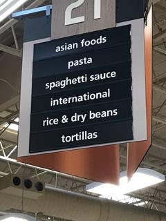
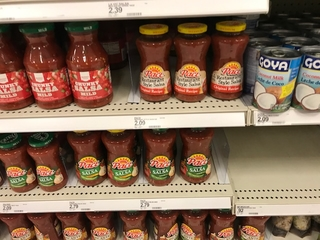
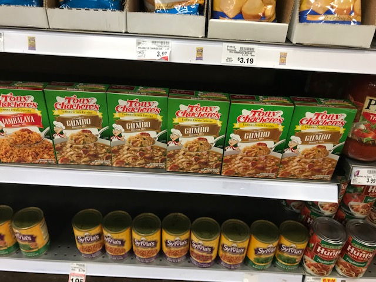

2019-01-20 / In categories Posts
Dear Stumpers:

There is segregation going on right under our noses in a place you depend on and likely bring your children. It is Supermarket segregation and it’s happening in grocery chains that have invested heavily in cultivating progressive images and niche markets. This isn’t an overt kind of Jim Crow segregation where specific people are banned from employment or shopping at the stores. This segregation is a coded message written in product grouping, placement and signage.
While most of the grocery store is organized by food grouping, breads, meats, pasta, spices, canned goods ets; foods deemed by supermarket managers, and product placement consultants to be sufficiently exotic to the customer base are placed in a specific isle labeled to mark these foods as different.
At my neighborhood New Seasons the self proclaimed, “Friendliest store in town” much of the Latin American and Asian foods are shelved in the “global goods section” which is then subdivided into sub-categories including; Mexican “Mexican Food,” I highly doubt that any Mexican person has ever seen this sign and thought, “How convenient they have thoughtfully set aside all the food for Mexicans. Italian inspired food has graduated from ethnic labeling and is just labeled Pasta and Pasta Sauce.
 The Ever Popular Target has the someonet outdated “Hispanic Meals” on Isle 22. And They accomplish the amazing feat of getting the foods from ¾ of the world’s land mass into “Asian Meals and Sides” . On isles 22 and 23 you can find the Mexican classics Pace Picante Sauce (Made in San Antonio TX by folks who know what Salsa is supposed to taste like, and the Pacific Rim favorite Uncle Ben’s rice. Once again Pasta and Sauce have graduated you know because all of the people who ever consider Italian people to be “colored” are dead now.
At My local Kroger this section is called “international food” is divided into asian foods, Latin American food and once again Pasta. Here you can find your gumbo mix in this section as well as the super authentic Mexican Soft Tortilla Bowls.  What does this kind of section labeling and product placement say about what they are expecting of their shopper?
To most of the customers it says:
We are just going to go ahead and assume you are a white person who is only familiar with European and American cooking styles. So we put all of the exotic ingredients in one section and grouped them only partially accurately by regional cuisine, to make your fusion cooking experiment more user-friendly.
The other hidden message. If you’re a person who’s family cooking style regularly uses these ingredients it says:
We’d like you to know that your food is a little weird, and regional it’s regionally specific and or imported products. By extension, your weird you eat strange things, so we put it all in one place so as not to confuse the normal people who are here to buy macaroni and cheese.
If you feel like I am making a stretch what if all the pillsbury mixes, quaker oats, maple syrup stove top stuffing and hamburger helper were in a section called, “Domestic Food”? I would like to should be point out that this bizarre segregation only applies to the shelf stable foods. Items that have to be refrigerated or frozen live with their food group categories in refrigerator cases.
Why are Rosarita refried beans not shelved with the other canned bean products? Can tortillas not be shelved with the bread? Why can’t dried peppers reside with the other dried foods? Why is the rice in the Asian foods when it is a staple of Cajun, Mexican, South American, and Caribbean cuisines?
There is another model and to see it we need look no further than the quixotic and I’ll be it less than perfect grocery chain. Trader Joe’s. When it comes to shelf stable food they do just as I am suggesting. They organize them by ingredient type. Canned legumes go with canned legumes, soups with soups, grains with grains, and condiments regardless of origin are all in the same isle. I’ve never seen a customer get confused about this and I’ve never heard a single person in their ask where they can find the “Mexican” or “Asian” food.
Its so stupid it’s laughable but the cumulative impact of this kind of otherization is real. For Latinos it’s especially harmful. The racist language against Latinos in America has largely centered on food culture. We all remember “taco trucks on every corner,” but lets not forget the pernicious slur “beaner” and the loathsom cultural tendency to describe latin women as “spicey”. Sure Germans were once routinely called Krauts but at least we have the decency to shelf the sauerkraut in the condiment section.
Why should any of this matter Stumped Mom it’s just a grocery store?
Well Stumpers it wouldn’t matter if it wasn’t just the grocery stores. The way that prejudice and racism is conveyed isn’t just through big overt actions, like institutionalized segregation, or redlining it also operates on the level of these little things. Small interactions and signals that pile up like grains of sand that by themselves are insignificant but when piled en masse can crush a person. So what is it going to take to get our neighborhood grocery stores to de-exoticize foods that a routine part of American life? Just like any kind of change people need to speak up and it can’t just be the groups that are being targeted. I like to say that I live by the credo. If you see it say it. Fill out a comment card, ask to speak to the manager and pass this blog post along.